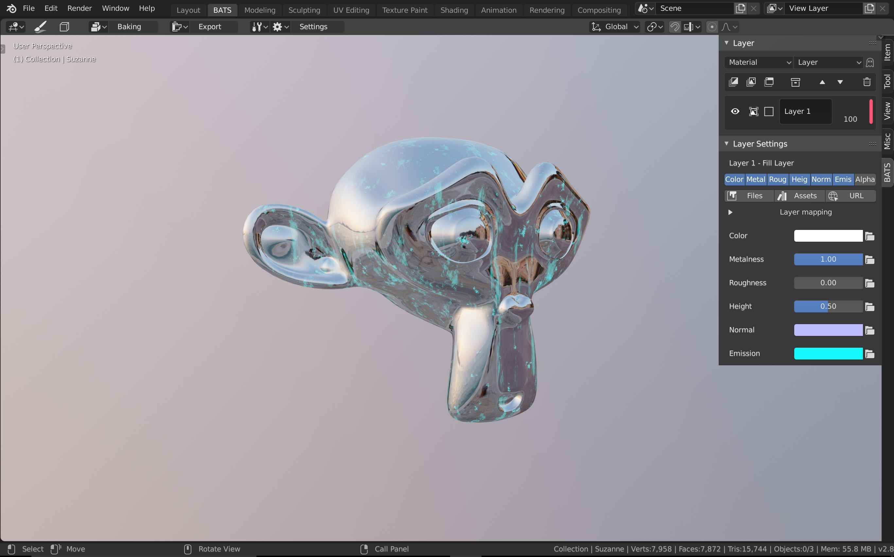

Usage
To use Layer Painter you need to be in the workspace that comes with the addon. You can open the workspace by selecting the active tool and pressing the Activate Layer Painter button in the N-Panel or the topbar.

By default your workspace should look like in the screenshot above.
The topbar is open, because you need it for a lot of the settings and operations. On the right there is the layer stack with its corresponding settings. You could close this panel, because you can also use the shortcuts.
Background
You can change the look of the background as explained here. You can also rotate the image by pressing the shortcut specified in the preferences and then moving the mouse left and right.